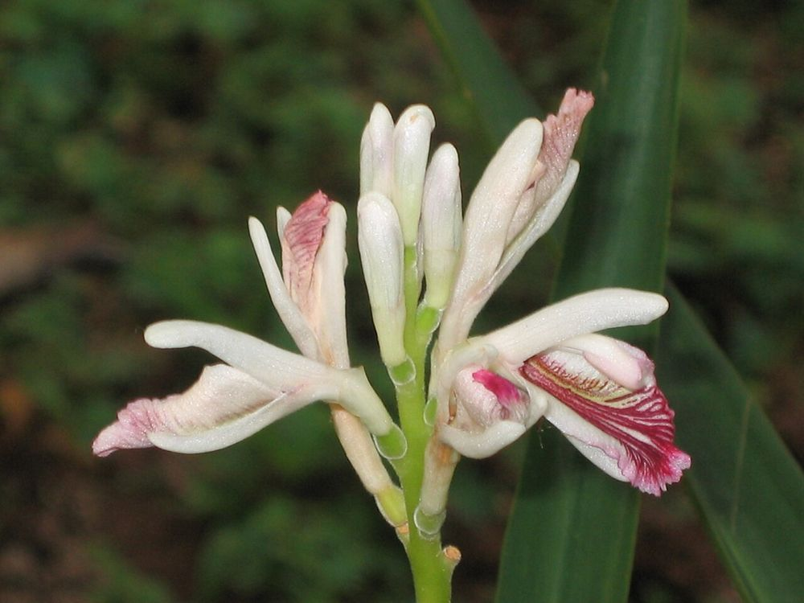

🌿 சித்த மருத்துவக் குறிப்பு:
ஒரு சிறு துண்டு சிற்றரத்தையை வாயில் அடக்கிக்கொண்டால் தொண்டைக் கரகரப்பு நீங்கும். சிற்றரத்தையைத் தட்டித் தேனில் குழைத்துக் கொடுத்தால் சளி, இருமல் குறையும் என்பது சித்தர் மரபு.
🎯 முக்கியப் பயன்: சளி, இருமல், தொண்டைக் கரகரப்புக்குச் சித்த மருத்துவத்தில் புகழ்பெற்ற வேர்.
உங்களுக்குத் தெரியுமா?
1இஞ்சியின் சொந்தக்காரி
சிற்றரத்தை இஞ்சியின் குடும்பத்தைச் சேர்ந்த செடி. அதனால்தான் இதன் கிழங்கில் இஞ்சி போன்ற காரமும் நறுமணமும் உள்ளது.
2சிற்றரத்தை, பேரரத்தை – இரண்டு வகை
அளவில் சிறியதும் மருத்துவக் குணம் மிகுந்ததும் "சிற்றரத்தை". அளவில் பெரியது "பேரரத்தை". இரண்டும் அரத்தை இனத்தைச் சேர்ந்தவை.
3அஞ்சறைப்பெட்டியின் அங்கம்
பண்டைய காலம் முதல் தமிழர் வீடுகளின் அஞ்சறைப்பெட்டியிலும் நாட்டு மருந்துக் கடைகளிலும் தவறாமல் இடம்பெறும் மூலிகை இது.
இந்தத் தகவல் பயனுள்ளதாக இருந்ததா?